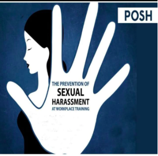
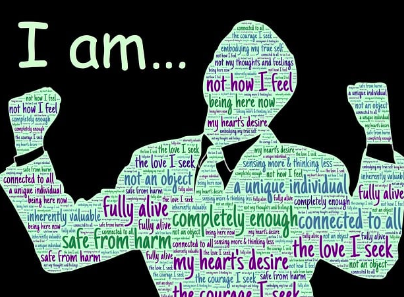
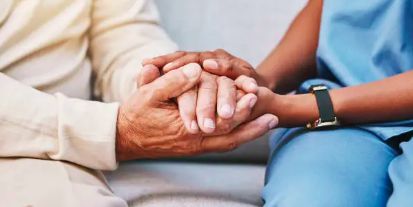
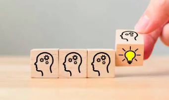
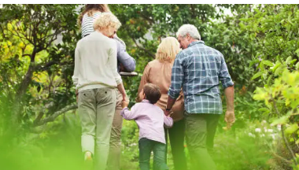

Welcome to Ashni Foundation
ASHNI Foundation is a PAN India not for profit organization working towards building consciousness and awareness about Gender Sensitivity, Prevention of Sexual Harassment at work, Women’s and Children’s rights towards Education and Health. Foundation majorly works in building network of resources for trainers / facilitators, counselors and external members who contribute to make workplaces gender-sensitive and safe places for professional development. ASHNI has been working for last six years informally as a group of Social Workers, Counselors, Psychologists, HR and Labor law practitioners and our members have been working as experts in the field of POSH, Prevention of Sexual Harassment at workplaces, ECCE Staff Capacity Building, Life Skills / Soft Skills, supporting NGOs to develop and assess development delay. We also provide soft skills training and consultancy to other charity organizations to build robust systems of HR practices, processes and SOPs and project management. During lockdown, we realized the need of developing ourself as a resource organization and expand our programs hence applied for registration as a society on 05-Aug-21 under registration no Maha/838/2021/Pune and registered as a Public Trust on 02-Jun-22 under registration no F-58092 for Pune Region. 
14 Life Skills by WHO
Self Awareness
Understanding oneself, our personality, our virtues and shortcomings, as well as our likes and dislikes, is a key component of self-awareness. Being more self-aware can make it easier for us to identify times when we feel pressured or stressed. It is frequently a requirement for developing empathy for other people as well as for successful interpersonal relationships and communication. 
Empathy
We must be aware of and considerate of the needs, wants, and feelings of others if we are to build healthy relationships with our loved ones and society at large. The capacity to picture another person's life is known as empathy. Our interactions with other people will be one-way if we lack empathy. Accepting someone who may be extremely different from us might be made easier with empathy. This can enhance interpersonal relationships, particularly in circumstances with ethnic or cultural variety. 
Critical Thinking
The capacity for objective analysis of data and experiences is known as critical thinking. By enabling us to identify and evaluate the elements—such as values, peer pressure, and the media—that shape our attitudes and behaviors, critical thinking can improve our health. 
Creative Thinking
Four qualities define creative thinking: fluency (producing new ideas), flexibility (changing perspectives readily), originality (conceiving of something new), and elaboration (building on earlier ideas). Creative thinking is a novel way of viewing or doing things.
Decision Making
Making decisions about our life gives us the ability to respond to them in a positive way. There may be negative health effects from this. It can instruct individuals on how to actively choose their course of action based on a health assessment of various possibilities and the anticipated consequences of those choices.
Problem Solving
Our ability to solve difficulties helps us approach life's challenges in a positive way. Unresolved major issues have the potential to induce psychological stress and physical strain as well. The process of recognizing and resolving disputes or issues is known as problem-solving. It entails dissecting an issue into its constituent elements, considering several approaches, and selecting the most effective one.
Interpersonal Relationships
Positive relationships with the people we engage with are facilitated by having interpersonal connection skills. This could entail having the ability to form and maintain cordial relationships, which is crucial for maintaining our social and mental wellbeing. Maintaining positive relationships with family members, who are a crucial source of social support, could be necessary. It might also imply having the ability to end relationships amicably. 
Effective Communication
Being able to express ourselves verbally and nonverbally in ways that suit our cultures and circumstances is a necessary component of effective communication. This entails having the capacity to communicate wants, worries, and opinions. It might also entail having the ability to request guidance and assistance when needed. Understanding the causes of stress in our lives, how it affects us, and taking action to decrease our stress levels by altering our surroundings or way of life and developing relaxation techniques are all part of coping with stress.
Coping with Stress
Up to 95% of illnesses and diseases are the result of false ideas like "I'm not good enough" or "Something is wrong with me." The cell's membrane functions as its brain rather than its nucleus. The cell membrane contains our stored beliefs. Our actions are always based on unconscious programming that is stored as beliefs in our cells, unless we are completely mindful of what we are doing and why at all times.

Coping with Emotions
Our emotions serve as a fantastic gauge of our wellbeing. When our minds are not consumed by pessimistic thoughts, we experience joy, love, and tranquility. Feelings of dread, anger, or depression are clear indicators that our thinking has turned negative and unhealthy. Gaining this understanding and deciding to stop thinking negatively can have a profoundly transformative effect on one's life.